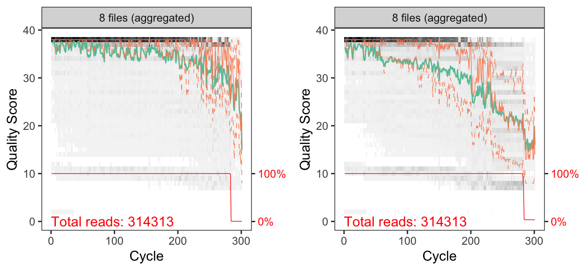
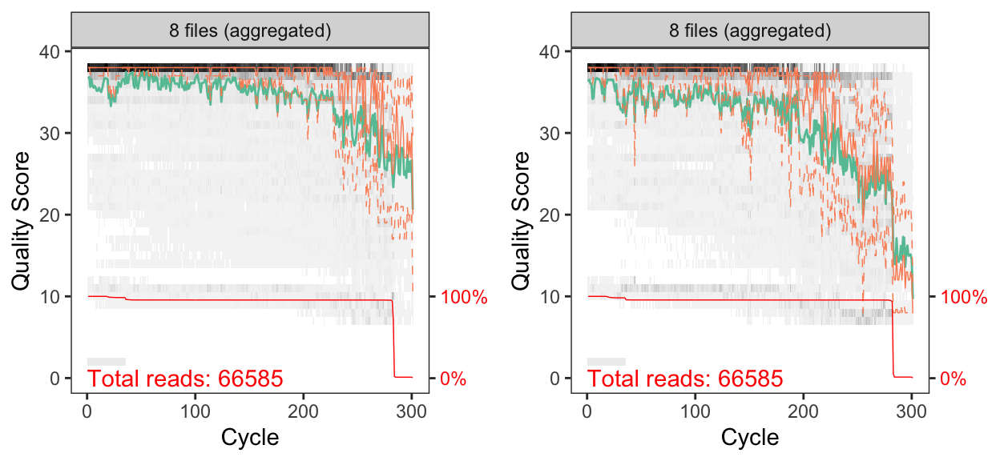
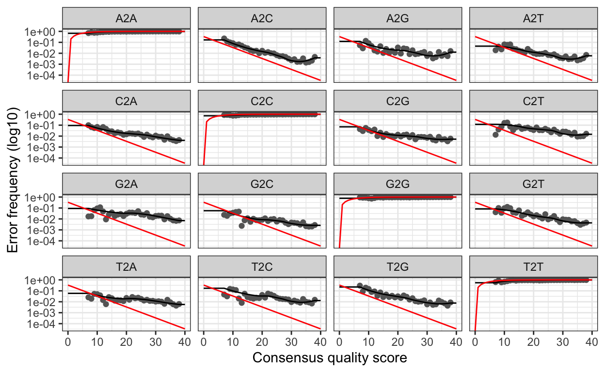
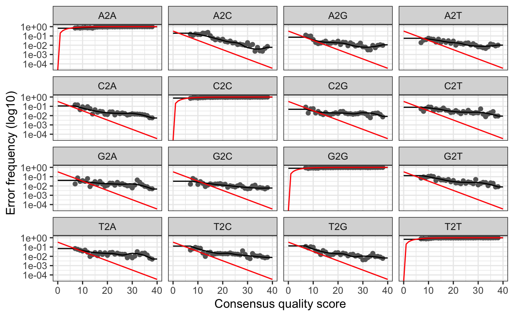
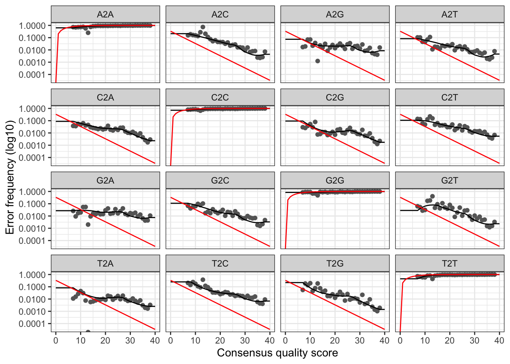
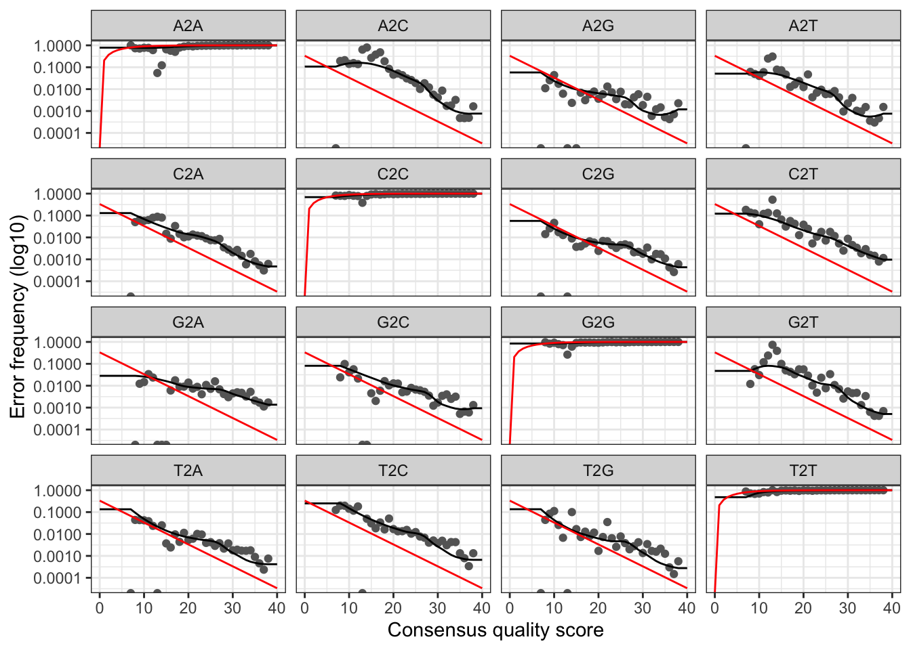

Complete, reproducible DADA2 workflow for processing the raw 16S rRNA Illumina data from hypoxic and normoxic samples collected during a 2017 hypoxic event in Bocas del Toro, Panama. Several samples were re-sequenced and processed independently before being merged in the last section of the workflow, prior to analysis. We sequenced 30 samples in the first run (Run01) and then re-sequenced 8 samples because of low initial yield (Run02).
In the paper itself, we only focuses on the water samples, however we include data and analysis from all samples collected. This script will process the data from different runs separately and then combine the results and finish the workflow. Please note that to decrease rendering time of this website, we set code chunks to eval=FALSE after the initial processing. Remove this flag to rerun these code chunks.
In order to run this workflow, you either need the raw data, available on the figshare project site, or the trimmed data, available from the ENA under project accession number … See the Data Availability page for complete details.
This pipeline below is exactly how we processed our 16S rRNA data using DADA2(Callahan et al. 2016). This is not meant to be a tutorial and we only provide minimal annotation. There are many great tutorials and explanations out there on amplicon processing that you can dive into.
Depending on the DADA2 version you have installed, you may get slightly different results due to fundamental changes in the code-base. This is unavoidable at times and the developers do the best they can to maintain fidelity across versions. To see the package versions of tools used in this workflow, please see the Session Info at the end of this page. We set random number seeds to ensure full reproducibility.
This is a workflow for processing the raw 16S rRNA Illumina data for the study. The workflow consists of the following steps:
| Step | Command | What we’re doing |
|---|---|---|
| 1 | cutadapt |
remove primers |
| 2 | multiple | prepare input file names & paths |
| 3 | filterAndTrim() |
assess quality & filter reads |
| 4 | learnErrors() |
generate an error model for the data |
| 5 | derepFastq |
dereplicate sequences |
| 6 | dada() |
infer ASVs on both forward & reverse reads independently |
| 7 | mergePairs() |
merge forward & reverse reads to further refine ASVs |
| 8 | makeSequenceTable() |
generate a count table |
| 9 | mergeSequenceTables() |
merge sequence tables from the two runs |
| 10 | removeBimeraDenovo() |
screen for & remove chimeras |
| 11 | assignTaxonomy() |
assign taxonomy & finish pipeline |
| 12 | save.image() |
save an image of seqtab & taxtab for next part of workflow |
| 13 | Bonus | track read changes through pipeline for samples in each run |
Before we start the DADA2 pipeline we need to run catadapt(Martin 2011) on all fastq.gz files to trim the primers. We will set the error rate (-e) to 0.12 (= 12%).
cutadapt -g {F-ADAPTER} -G {R-ADAPTER} /
-o ${R1}.trimmed.fastq /
-p {R2}.trimmed.fastq /
${R1} ${R2} /
--discard-untrimmed -e 0.12Where:
-g is GTGYCAGCMGCCGCGGTA (the 505F primer)-G is CCGYCAATTYMTTTRAGT (the XXX primer)R1 and R2 are the forward and reverse reads, respectively.This will yield a ~373 bp amplicon. The input files for cutadapt are in the 00_RAW_FILES/RUN01 and 00_RAW_FILES/RUN02 directories and the output files from cutadapt are in 01_TRIMMED/RUN01 and 01_TRIMMED/RUN02 directories. The output files are input for the DADA2 portion of the workflow.
For programmatic reasons, we drop the Run prefix from the output files and instead delineate run id with _1_. This is probably a little confusing so change as you see fit.
The trimmed file are the input for the DADA2 workflow. To simplify things a little in the code below, R variables for RUN01 have the suffix X1 and RUN02 is Y2.
Next, we need to set the working directory for the input files. When we ran cutadapt we saved the trimmed files to a directory called 01_TRIMMED/. We also create a variable to hold the file path.
path_X1 <- "01_TRIMMED/RUN01/"
head(list.files(path_X1))
[1] "CCC1_1_R1.trimmed.fastq" "CCC1_1_R2.trimmed.fastq"
[3] "CCC2_1_R1.trimmed.fastq" "CCC2_1_R2.trimmed.fastq"
[5] "CCC3_1_R1.trimmed.fastq" "CCC3_1_R2.trimmed.fastq"
path_Y2 <- "01_TRIMMED/RUN02/"
head(list.files(path_Y2))
[1] "CCC3_2_R1.trimmed.fastq" "CCC3_2_R2.trimmed.fastq"
[3] "CCC4_2_R1.trimmed.fastq" "CCC4_2_R2.trimmed.fastq"
[5] "CCC5_2_R1.trimmed.fastq" "CCC5_2_R2.trimmed.fastq"Here we see a partial list of files in the directory. All looks good. Now, we create variables to hold the names of the forward (R1) and reverse (R2) fastq files.
fnFs_X1 <- sort(list.files(path_X1, pattern = "_R1.trimmed.fastq"))
fnRs_X1 <- sort(list.files(path_X1, pattern = "_R2.trimmed.fastq"))
fnFs_Y2 <- sort(list.files(path_Y2, pattern = "_R1.trimmed.fastq"))
fnRs_Y2 <- sort(list.files(path_Y2, pattern = "_R2.trimmed.fastq"))And finally we can extract the sample names from the from the fastq files and have a look at the sample names from the two runs.
sample.names_X1 <- sapply(strsplit(fnFs_X1, "_"), `[`, 1)
fnFs_X1 <-file.path(path_X1, fnFs_X1)
fnRs_X1 <-file.path(path_X1, fnRs_X1)
sample.names_X1
[1] "CCC1" "CCC2" "CCC3" "CCC4" "CCC5" "CCC6" "CCR1" "CCR2" "CCR3" "CCR4"
[11] "CCR5" "CCR6" "MCR1" "MCR2" "MCR3" "MCR5" "SCC1" "SCC2" "SCC3" "SCR1"
[21] "SCR2" "SCR3" "WCC0" "WCC1" "WCC2" "WCC3" "WCR0" "WCR1" "WCR2" "WCR3"
sample.names_Y2 <- sapply(strsplit(fnFs_Y2, "_"), `[`, 1)
fnFs_Y2 <-file.path(path_Y2, fnFs_Y2)
fnRs_Y2 <-file.path(path_Y2, fnRs_Y2)
sample.names_Y2
[1] "CCC3" "CCC4" "CCC5" "CCC6" "CCR2" "CCR3" "CCR4" "CCR5"As you can see, the Run02 samples are duplicates of some Run01 samples.
First let’s look at the quality of our reads. The numbers in brackets specify which samples to view. Here we are looking at an aggregate plot of all data (except the negative control)
p1 <- plotQualityProfile(fnFs_X1[23:30], aggregate = TRUE)
p2 <- plotQualityProfile(fnRs_X1[23:30], aggregate = TRUE)
grid.arrange(p1, p2, nrow = 1)
Aggregated quality score plots for forward (left) & reverse (right) reads from Run 01.
p1 <- plotQualityProfile(fnFs_Y2[1:8], aggregate = TRUE)
p2 <- plotQualityProfile(fnRs_Y2[1:8], aggregate = TRUE)
grid.arrange(p1, p2, nrow = 1)
Aggregated quality score plots for forward (left) & reverse (right) reads from Run 02.
Both the forward and reverse reads look ok. There are definitely some quality issues. We can use the plots to help guide the filtering step. We don’t want read quality to drop below ~30 but we also need to make sure that our reads have sufficient overlap. DADA2 requires at least 12bp overlap, but the more the better. The V4 region of the 16S rRNA gene amplified with these primers is about 370bp. For both the forward and reverse reads, we see the quality drop at around 200bp. This is good because we have some room to play around.
First, we again make some path variables and setup a new directory of filtered reads.
#Place filtered files in filtered/ subdirectory
filt_path_X1 <- file.path(path_X1, "filtered")
filtFs_X1 <- file.path(filt_path_X1, paste0(sample.names_X1, "_F_filt.fastq.gz"))
filtRs_X1 <- file.path(filt_path_X1, paste0(sample.names_X1, "_R_filt.fastq.gz"))
filt_path_Y2 <- file.path(path_Y2, "filtered")
filtFs_Y2 <- file.path(filt_path_Y2, paste0(sample.names_Y2, "_F_filt.fastq.gz"))
filtRs_Y2 <- file.path(filt_path_Y2, paste0(sample.names_Y2, "_R_filt.fastq.gz"))And then we trim the reads.
out_X1 <- filterAndTrim(fnFs_X1, filtFs_X1, fnRs_X1, filtRs_X1,
truncLen=c(260,160), maxN=0, maxEE=c(3,5),
truncQ=2, rm.phix=TRUE, compress=TRUE,
multithread=TRUE)
head(out_X1)
out_Y2 <- filterAndTrim(fnFs_Y2, filtFs_Y2, fnRs_Y2, filtRs_Y2,
truncLen=c(260,160), maxN=0, maxEE=c(5,5),
truncQ=2, rm.phix=TRUE, compress=TRUE,
multithread=TRUE)
head(out_Y2)And here are the tables showing how the filtering step affected the number of reads in each sample. As you can see, some of the samples in Run01 started with a low read count to begin with. These were the samples re-sequenced in Run02.
Now it is time to assess the error rate of the data. The DADA2 algorithm uses a parametric error model. Every amplicon data set has a different set of error rates and the learnErrors method learns this error model from the data. It does this by alternating estimation of the error rates and inference of sample composition until they converge on a jointly consistent solution. The algorithm begins with an initial guess, for which the maximum possible error rates in the data are used.
errF_X1 <- learnErrors(filtFs_X1, multithread = TRUE)
102085360 total bases in 392636 reads from 24 samples will be used for learning the error rates.
errF_Y2 <- learnErrors(filtFs_Y2, multithread = TRUE)
15229500 total bases in 58575 reads from 8 samples will be used for learning the error rates.
errR_X1 <- learnErrors(filtRs_X1, multithread = TRUE)
93984320 total bases in 587402 reads from 30 samples will be used for learning the error rates.
errR_Y2 <- learnErrors(filtRs_Y2, multithread = TRUE)
9372000 total bases in 58575 reads from 8 samples will be used for learning the error rates.Finally, we can plot the errors. The error rates for each possible transition (A to C, A to G, etc.) are shown. Points are the observed error rates for each consensus quality score. The black line shows the estimated error rates after convergence of the machine-learning algorithm. The red line shows the error rates expected under the nominal definition of the Q-score. Here the estimated error rates (black line) are a good fit to the observed rates (points), and the error rates drop with increased quality as expected.
plotErrors(errF_X1, nominalQ = TRUE)
plotErrors(errF_Y2, nominalQ = TRUE)
plotErrors(errR_X1, nominalQ=TRUE)
plotErrors(errR_Y2, nominalQ=TRUE)
Now we can use derepFastq to identify the unique sequences in the forward and reverse fastq files.
derepFs_X1 <- derepFastq(filtFs_X1)
names(derepFs_X1) <- sample.names_X1
derepFs_Y2 <- derepFastq(filtFs_Y2)
names(derepFs_Y2) <- sample.names_Y2
derepRs_X1 <- derepFastq(filtRs_X1)
names(derepRs_X1) <- sample.names_X1
derepRs_Y2 <- derepFastq(filtRs_Y2)
names(derepRs_Y2) <- sample.names_Y2At this point we are ready to apply the core sample inference algorithm (dada) to the filtered and trimmed sequence data. We run the dada command first on the forward reads from Run01 and Run02, then the reverse reads.
dadaFs_X1 <- dada(derepFs_X1, err = errF_X1, multithread = TRUE)
Sample 1 - 27522 reads in 8258 unique sequences.
Sample 2 - 5410 reads in 1898 unique sequences.
Sample 3 - 1503 reads in 699 unique sequences.
Sample 4 - 725 reads in 368 unique sequences.
Sample 5 - 9519 reads in 2861 unique sequences.
Sample 6 - 929 reads in 422 unique sequences.
Sample 7 - 2535 reads in 1085 unique sequences.
Sample 8 - 2007 reads in 898 unique sequences.
Sample 9 - 4180 reads in 1621 unique sequences.
Sample 10 - 1235 reads in 580 unique sequences.
Sample 11 - 1356 reads in 610 unique sequences.
Sample 12 - 8439 reads in 2719 unique sequences.
Sample 13 - 39245 reads in 20793 unique sequences.
Sample 14 - 24640 reads in 13612 unique sequences.
Sample 15 - 18948 reads in 11774 unique sequences.
Sample 16 - 21145 reads in 11407 unique sequences.
Sample 17 - 23636 reads in 16076 unique sequences.
Sample 18 - 28622 reads in 16160 unique sequences.
Sample 19 - 23189 reads in 14848 unique sequences.
Sample 20 - 23803 reads in 15772 unique sequences.
Sample 21 - 24920 reads in 18558 unique sequences.
Sample 22 - 24503 reads in 17181 unique sequences.
Sample 23 - 40755 reads in 16835 unique sequences.
Sample 24 - 33870 reads in 12668 unique sequences.
Sample 25 - 31001 reads in 10984 unique sequences.
Sample 26 - 25769 reads in 9825 unique sequences.
Sample 27 - 42175 reads in 16208 unique sequences.
Sample 28 - 19276 reads in 8567 unique sequences.
Sample 29 - 22175 reads in 10611 unique sequences.
Sample 30 - 54370 reads in 23160 unique sequences.
dadaFs_Y2 <- dada(derepFs_Y2, err = errF_Y2, multithread = TRUE)
Sample 1 - 13561 reads in 3674 unique sequences.
Sample 2 - 839 reads in 416 unique sequences.
Sample 3 - 17391 reads in 4361 unique sequences.
Sample 4 - 568 reads in 256 unique sequences.
Sample 5 - 12668 reads in 3593 unique sequences.
Sample 6 - 12467 reads in 3788 unique sequences.
Sample 7 - 308 reads in 127 unique sequences.
Sample 8 - 773 reads in 356 unique sequences.
dadaRs_X1 <- dada(derepRs_X1, err = errR_X1, multithread = TRUE)
Sample 1 - 27522 reads in 7614 unique sequences.
Sample 2 - 5410 reads in 1713 unique sequences.
Sample 3 - 1503 reads in 581 unique sequences.
Sample 4 - 725 reads in 341 unique sequences.
Sample 5 - 9519 reads in 2976 unique sequences.
Sample 6 - 929 reads in 358 unique sequences.
Sample 7 - 2535 reads in 949 unique sequences.
Sample 8 - 2007 reads in 717 unique sequences.
Sample 9 - 4180 reads in 1362 unique sequences.
Sample 10 - 1235 reads in 500 unique sequences.
Sample 11 - 1356 reads in 484 unique sequences.
Sample 12 - 8439 reads in 2448 unique sequences.
Sample 13 - 39245 reads in 20129 unique sequences.
Sample 14 - 24640 reads in 13082 unique sequences.
Sample 15 - 18948 reads in 11021 unique sequences.
Sample 16 - 21145 reads in 10564 unique sequences.
Sample 17 - 23636 reads in 14162 unique sequences.
Sample 18 - 28622 reads in 13552 unique sequences.
Sample 19 - 23189 reads in 13341 unique sequences.
Sample 20 - 23803 reads in 13651 unique sequences.
Sample 21 - 24920 reads in 16576 unique sequences.
Sample 22 - 24503 reads in 14757 unique sequences.
Sample 23 - 40755 reads in 15298 unique sequences.
Sample 24 - 33870 reads in 12044 unique sequences.
Sample 25 - 31001 reads in 10379 unique sequences.
Sample 26 - 25769 reads in 8715 unique sequences.
Sample 27 - 42175 reads in 14757 unique sequences.
Sample 28 - 19276 reads in 8013 unique sequences.
Sample 29 - 22175 reads in 9771 unique sequences.
Sample 30 - 54370 reads in 21001 unique sequences.
dadaRs_Y2 <- dada(derepRs_Y2, err = errR_Y2, multithread = TRUE)
Sample 1 - 13561 reads in 3676 unique sequences.
Sample 2 - 839 reads in 312 unique sequences.
Sample 3 - 17391 reads in 3961 unique sequences.
Sample 4 - 568 reads in 220 unique sequences.
Sample 5 - 12668 reads in 3200 unique sequences.
Sample 6 - 12467 reads in 3310 unique sequences.
Sample 7 - 308 reads in 113 unique sequences.
Sample 8 - 773 reads in 278 unique sequences.We can also inspect the returned dada-class objects for the forward and reverse reads. Let’s have a peek at sample #1 from Run01 as an example.
dadaFs_X1[[1]]
dada-class: object describing DADA2 denoising results
257 sequence variants were inferred from 8258
input unique sequences.
Key parameters: OMEGA_A = 1e-40, OMEGA_C = 1e-40, BAND_SIZE = 16
dadaRs_X1[[1]]
dada-class: object describing DADA2 denoising results
188 sequence variants were inferred from 7614
input unique sequences.
Key parameters: OMEGA_A = 1e-40, OMEGA_C = 1e-40, BAND_SIZE = 16This output tells us how many true sequence variants the DADA2 algorithm inferred from the unique sequences. In this case, 257 sequence variants were inferred from 8258 unique forward sequences and 188 sequence variants were inferred from 7614 unique reverse sequences.
We now merge the forward and reverse reads together to obtain the full denoised sequences. Merging is performed by aligning the denoised forward reads with the reverse-complement of the corresponding denoised reverse reads, and then constructing the merged “contig” sequences. By default, merged sequences are only output if the forward and reverse reads overlap by at least 12 bases, and are identical to each other in the overlap region (but these conditions can be changed via function arguments).
mergers_X1 <- mergePairs(dadaFs_X1, derepFs_X1, dadaRs_X1, derepRs_X1)
mergers_Y2 <- mergePairs(dadaFs_Y2, derepFs_Y2, dadaRs_Y2, derepRs_Y2)The mergers_ objects are lists of data.frames from each sample. Each data.frame contains the merged sequence, its abundance, and the indices of the forward and reverse sequence variants that were merged. Paired reads that did not exactly overlap were removed by mergePairs, further reducing spurious output.
Now we construct amplicon sequence variant (ASV) tables for each run.
seqtab_X1 <- makeSequenceTable(mergers_X1)
dim(seqtab_X1)
[1] 30 11305
table(nchar(getSequences(seqtab_X1)))
260 318 365 366 367 368 369 370 371 372 373 374 375
4 1 18 19 14 17 161 35 109 294 1185 359 1376
376 377 378 379 380 381 382 383 384 385 386 387 388
2138 4223 382 214 360 141 25 14 5 5 3 4 3
391 392 393 394 395 396 397 398 399 400 403 404 406
4 12 30 67 54 7 2 2 2 4 9 1 2
seqtab_Y2 <- makeSequenceTable(mergers_Y2)
dim(seqtab_Y2)
[1] 8 168
table(nchar(getSequences(seqtab_Y2)))
260 282 315 344 353 368 369 370 371 372 373 374 375 376 377 379
1 1 1 1 1 3 4 2 2 13 26 3 46 20 37 1
380 382 383 385 388 400
1 1 1 1 1 1The sequence table is a matrix with rows corresponding to (and named by) the samples, and columns corresponding to (and named by) the sequence variants. We have 11305 sequence variants in Run01 and 168 in Run02. But there is also a range of sequence lengths. We just need to select a range that corresponds to the expected amplicon length and eliminate the spurious reads.
seqtab_X1.2 <- seqtab_X1[,nchar(colnames(seqtab_X1)) %in% seq(368,383)]
dim(seqtab_X1.2)
[1] 30 11033
table(nchar(getSequences(seqtab_X1.2)))
368 369 370 371 372 373 374 375 376 377 378 379 380
17 161 35 109 294 1185 359 1376 2138 4223 382 214 360
381 382 383
141 25 14
seqtab_Y2.2 <- seqtab_Y2[,nchar(colnames(seqtab_Y2)) %in% seq(368,383)]
dim(seqtab_Y2.2)
[1] 8 160
table(nchar(getSequences(seqtab_Y2.2)))
368 369 370 371 372 373 374 375 376 377 379 380 382 383
3 4 2 2 13 26 3 46 20 37 1 1 1 1
saveRDS(seqtab_X1.2, "rdata/16s-dada2/seqtab_X1.2.rds")
saveRDS(seqtab_Y2.2, "rdata/16s-dada2/seqtab_Y2.2.rds")At this point we have sequence tables for two runs, however the samples in Run02 are duplicates of some samples in Run01. Before we continue we need to merge the two runs. This is because we want to call chimeras (the next step) on the merged data. For simplicity, we will just read in the two rds files generated in the previous step and then merge them using the DADA2 command mergeSequenceTables. There will be a small complaint about duplicate sample names but we can ignore that.
remove(list = ls())
seqtab.1 <- readRDS("rdata/16s-dada2/seqtab_X1.2.rds")
seqtab.2 <- readRDS("rdata/16s-dada2/seqtab_Y2.2.rds")
st.sum <- mergeSequenceTables(table1 = seqtab.1, table2 = seqtab.2, tables = NULL,
repeats = "sum", orderBy = "abundance")
## Duplicated sample names detected in the rownames.We then save the merged sequence table as a new rds file…
saveRDS(st.sum, "rdata/16s-dada2/combo_run1_run2.rds")We will read in the RDS file containing the sequence table saved above. We also need to run remove(list = ls()) command, otherwise the final image we save will be huge. This way, the image only contains the sample data, seqtab, and taxtab before & after running removeBimeraDenovo.
remove(list = ls())
st.all <- readRDS("rdata/16s-dada2/combo_run1_run2.rds")This may seem redundant (and it probably is) but it lets me work with only the data in the rds file instead of everything generated in the pipeline thus far. This becomes important when we save the final rdata file from the workflow. If we were to save the whole workflow the final file would be large and clunky. This way it contains only the data we need going forward. The variable st.all is the combined sequence tables of Run01 and Run02.
Even though the dada method corrects substitution and indel errors, chimeric sequences remain. According to the DADA2 documentation, the accuracy of sequence variants after denoising makes identifying chimeric ASVs simpler than when dealing with fuzzy OTUs. Chimeric sequences are identified if they can be exactly reconstructed by combining a left-segment and a right-segment from two more abundant parent sequences.
seqtab <- removeBimeraDenovo(st.all,
method="consensus",
multithread=TRUE)
dim(seqtab)
[1] 30 6160
sum(seqtab)/sum(st.all)
[1] 0.9129203When we account for the abundances of each variant, we see chimeras account for about 9% of the merged sequence reads. Not bad. The variable seqtab is the combined sequence tables of Run01 and Run02, screened for chimeras. This is the final sequence table.
The assignTaxonomy command implements the naive Bayesian classifier, so for reproducible results you need to set a random number seed (see issue #538). We did this at the beginning of the workflow. For taxonomic assignment, we are using the Silva version 132(Quast et al. 2012). The developers of DADA2 maintain a formatted version of the database.
And then native Baysian classifier against the Silva database.
tax_silva <- assignTaxonomy(
seqtab, "../taxonomy_databases/silva_nr_v132_train_set.fa.gz",
multithread = TRUE)And finally, we save an image for use in the analytic part of the workflow. This R data file will be needed as the input for the phyloseq portion of the workflow. See the Data Availability page for complete details on where to get this file.
save.image("rdata/16s-dada2/combo_pipeline.rdata")The DADA2 analysis is now complete. Next we use phyloseq and the combo_pipeline.rdata file for the subsequent analysis.
One more task we can do is look at the number of reads that made it through each step of the pipeline for every sample. To gauge the overall performance of the runs and how read totals changed through the pipeline, we need to rerun chimera removal on the pre-merged data and then generate a summary table tracking reads by sample. These step could be useful to compare data across runs, but we will not do that here.
First we must identify and remove chimeras from each run.
#Run01
seqtab_X1.2.nochim <- removeBimeraDenovo(seqtab_X1.2,
method="consensus",
multithread=TRUE)
dim(seqtab_X1.2.nochim)
[1] 30 6105
sum(seqtab_X1.2.nochim)/sum(seqtab_X1.2)
[1] 0.912076
#Run01
seqtab_Y2.2.nochim <- removeBimeraDenovo(seqtab_Y2.2,
method="consensus",
multithread=TRUE)
dim(seqtab_Y2.2.nochim)
[1] 8 143
sum(seqtab_Y2.2.nochim)/sum(seqtab_Y2.2)
[1] 0.9971973Next, we build a table for each run that contains read counts for each sample from each step of the pipeline.
#Run01
getN_X1 <- function(x) sum(getUniques(x))
track_X1 <- cbind(out_X1, sapply(dadaFs_X1, getN_X1),
sapply(dadaRs_X1, getN_X1), sapply(mergers_X1, getN_X1),
rowSums(seqtab_X1.2.nochim))
colnames(track_X1) <- c("input", "filtered", "denoisedF",
"denoisedR", "merged", "nonchim")
rownames(track_X1) <- sample.names_X1
#Run02
getN_Y2 <- function(x) sum(getUniques(x))
track_Y2 <- cbind(out_Y2, sapply(dadaFs_Y2, getN_Y2),
sapply(dadaRs_Y2, getN_Y2), sapply(mergers_Y2, getN_Y2),
rowSums(seqtab_Y2.2.nochim))
colnames(track_Y2) <- c("input", "filtered", "denoisedF",
"denoisedR", "merged", "nonchim")
rownames(track_Y2) <- sample.names_Y2And then save the tables so we can use them later if we want.
#Run01
write.table(track_X1, "tables/16s-dada2/RUN01_read_changes.txt",
sep = "\t", quote = FALSE, col.names=NA)
#Run02
write.table(track_Y2, "tables/16s-dada2/RUN02_read_changes.txt",
sep = "\t", quote = FALSE, col.names=NA)That’s it for this part. Next, we do some data prep ahead of the community analysis portion of the workflow.
The source code for this page can be accessed on GitHub by clicking this link. Please note, that in order to process the data and build the website, we needed to run the pipeline and get the results. Then hard code the results and turn off the individual commands. So the raw file for this page is a bit messy—you have been warned.
Raw fastq files available on figshare at doi:10.25573/data.11819745.v1. Trimmed fastq files (primers removed) available through the ENA under project accession number PRJEB36632. Output files from this workflow available on figshare at doi:0.25573/data.12403865.
Callahan, Benjamin J, Paul J McMurdie, Michael J Rosen, Andrew W Han, Amy Jo A Johnson, and Susan P Holmes. 2016. “DADA2: High-Resolution Sample Inference from Illumina Amplicon Data.” Nature Methods 13 (7): 581. https://doi.org/10.1038/nmeth.3869.
Martin, Marcel. 2011. “Cutadapt Removes Adapter Sequences from High-Throughput Sequencing Reads.” EMBnet. Journal 17 (1): 10–12. https://doi.org/10.14806/ej.17.1.200.
Quast, Christian, Elmar Pruesse, Pelin Yilmaz, Jan Gerken, Timmy Schweer, Pablo Yarza, Jörg Peplies, and Frank Oliver Glöckner. 2012. “The Silva Ribosomal Rna Gene Database Project: Improved Data Processing and Web-Based Tools.” Nucleic Acids Research 41 (D1): D590–D596. https://doi.org/10.1093/nar/gks1219.
If you see mistakes or want to suggest changes, please create an issue on the source repository.
Text and figures are licensed under Creative Commons Attribution CC BY 4.0. Source code is available at https://github.com/hypocolypse/web/, unless otherwise noted. The figures that have been reused from other sources don't fall under this license and can be recognized by a note in their caption: "Figure from ...".